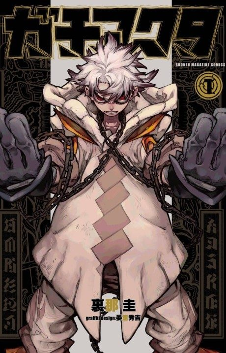

Gachiakuta
ガチアクタ
Rudo, a boy from a slum, is falsely accused of murder and thrown off the edge of his floating city into the monster-filled pit where the trash goes.
After the anime, read the manga from Chapter 88.
8.2AniList score
—Animeter, no votes yet
24episodes
Rate it or report where you stopped
Key events
These are spoilers. They stay blurred until you reveal them, one at a time or all at once.
Into the Pit Ep 1–3
- Rudo is framed for killing his foster father Regto and cast into the Pit.
- Rudo survives monstrous Trash Beasts and meets the Cleaner Enjin.
- Rudo awakens as a Giver who can draw power from cherished objects.
Cleaners and Raiders Ep 4–8
- Rudo arrives at Cleaner headquarters and is partnered with Zanka.
- A routine job is ambushed by the Raiders and their fighter Jabber.
- Zanka is poisoned while fighting Jabber, and Rudo learns to channel his power properly.
Canvas Town Ep 9
- Rudo sees the artist Remlin's work and learns the meaning behind the graffiti.
- Rudo starts to connect the graffiti to his own past.
Penta Ep 10–13
- Enjin collapses in the desert and the team splits up.
- Amo uses her Vital Instrument to make people see what they want to see.
- Amo's tragic past explains her mistrust of others.
Raid on Cleaner HQ Ep 14–23
- Zanka fights Jabber again during the attack.
- The Raiders' Zodyl reveals experiments creating artificial Trash Beasts.
- Rudo battles Zodyl, and the Raider Noerde is killed in the fighting.
Field Trip Ep 24
- Zanka recovers and Remlin apologizes.
- The team returns to Canvas Town while Amo is kept under restraint.
More like Gachiakuta
 Manga Ch. 1818.4
Manga Ch. 1818.4
 Done8.4
Done8.4
 Done7.6
Done7.6
 Done8.5
Done8.5
 Done8.3
Done8.3
 Manga Ch. 1118.0
Manga Ch. 1118.0
 Done7.6
Done7.6
 Manga Ch. 3408.9
Manga Ch. 3408.9
 Manga Ch. 1136.9
Manga Ch. 1136.9
 Manga Ch. 1257.2
Manga Ch. 1257.2
 Unclear7.4
Unclear7.4
 Manga Ch. 577.3
Manga Ch. 577.3